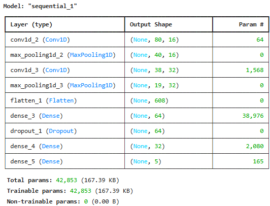
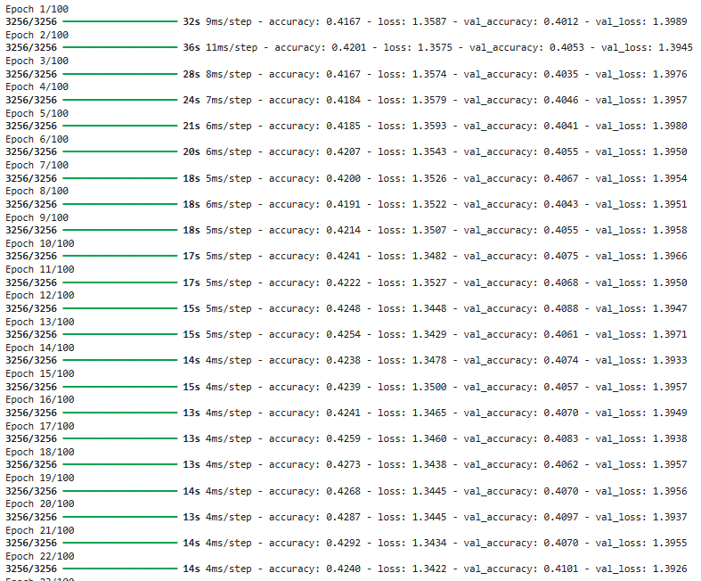
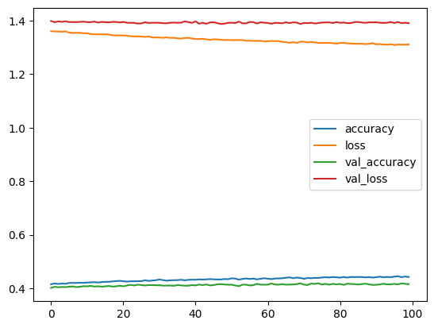
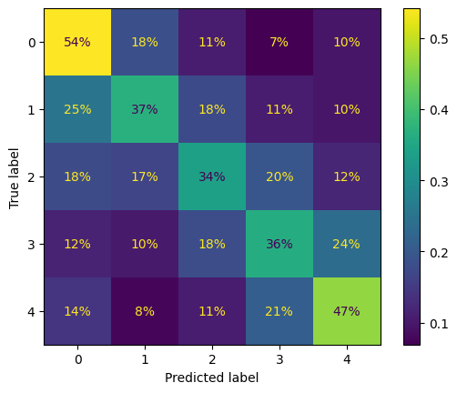

Project 3: Introduction to CNNs
import nltk import spacy # Download WordNet data (if not already downloaded) nltk.download('wordnet') nltk.download('omw-1.4') from nltk.stem.wordnet import WordNetLemmatizer nlp = spacy.load("en_core_web_sm", disable = ['parser', 'ner']) import numpy as np import pandas as pd import tensorflow as tf import matplotlib.pyplot as plt from tensorflow.keras.preprocessing.text import Tokenizer from tensorflow.keras.preprocessing.sequence import pad_sequences from tensorflow.keras.layers import Dense, Input, Bidirectional from tensorflow.keras.layers import LSTM, GRU, SimpleRNN, Embedding from tensorflow.keras.models import Model from tensorflow.keras.losses import SparseCategoricalCrossentropy from sklearn.model_selection import train_test_split from sklearn.feature_extraction.text import TfidfVectorizer# Preprocessing function def tokenize_and_lemmatize(df): """ Processes a DataFrame by lemmatizing and tokenizing the 'Text' column and returns the DataFrame with an updated column containing the processed text. :param df: DataFrame with a 'Text' column. :return: DataFrame with a modified 'Text' column containing lemmatized and tokenized text. """ # Initialize the WordNetLemmatizer lemmatizer = WordNetLemmatizer() stop_words = nlp.Defaults.stop_words # Default stop words from Spacy # Function to preprocess, tokenize, and lemmatize text def preprocess(text): tokens = text.split() # Lemmatize tokens and filter out stopwords processed_tokens = [lemmatizer.lemmatize(word.lower()) for word in tokens if word.lower() not in stop_words] # Join tokens back into a single string return ' '.join(processed_tokens) # Apply the preprocessing and tokenization function to the 'Text' column df['Text'] = df['Text'].fillna('').apply(preprocess) return df df = pd.read_csv(r"C:\Users\kristian.nordby\OneDrive - West Point\Desktop\AY 25-1\NLP\Project 3\Reviews.csv") df = tokenize_and_lemmatize(df) df.head()
import pandas as pd # Example DataFrame # df = pd.DataFrame({'score': [5, 1, 2, 5, 3, 5, 4, 5, 1, 2, 3]}) # Count the occurrences of each score score_counts = df['Score'].value_counts() # Determine the minimum count (least common score) min_count = score_counts.min() # Sample equal number of rows for each score balanced_df = ( df.groupby('Score', group_keys=False) .apply(lambda x: x.sample(min_count, random_state=42)) ) # Shuffle the rows to avoid any order bias (optional) balanced_df = balanced_df.sample(frac=1, random_state=42).reset_index(drop=True) print(balanced_df.Score.value_counts()) targets_num = balanced_df['Score'] inputs_text = balanced_df['Text'] len(targets_num) == len(inputs_text)Score 2 29769 1 29769 3 29769 5 29769 4 29769 Name: count, dtype: int64 True# Create a TF-IDF vectorizer vectorizer = TfidfVectorizer(stop_words='english', max_df=.80, min_df=.05) # Fit and transform the input text to create the TF-IDF matrix tfidf_matrix = vectorizer.fit_transform(inputs_text) # Convert the reshaped array to a list (if needed) inputs = tfidf_matrix # Print the shape of the resulting vectors to confirm print(f"Shape of input vectors: {inputs.shape}")Shape of input vectors: (148845, 82)from sklearn.preprocessing import OneHotEncoder targets = np.array(targets_num).reshape(-1, 1) # Initialize the OneHotEncoder encoder = OneHotEncoder(sparse_output=False) # Fit and transform the data targets = encoder.fit_transform(targets) print(targets[1])[1. 0. 0. 0. 0.]x_train, x_test, y_train, y_test = train_test_split(inputs, targets, test_size=.3) model = tf.keras.Sequential([ tf.keras.layers.Input(shape=(82, 1)), # Update input shape to (74, 1) tf.keras.layers.Conv1D(filters=16, kernel_size=3, activation='relu'), tf.keras.layers.MaxPooling1D(pool_size=2), tf.keras.layers.Conv1D(filters=32, kernel_size=3, activation='relu'), tf.keras.layers.MaxPooling1D(pool_size=2), tf.keras.layers.Flatten(), tf.keras.layers.Dense(64, activation='relu'), tf.keras.layers.Dropout(0.5), tf.keras.layers.Dense(32, activation='relu'), tf.keras.layers.Dense(5, activation='softmax') ]) model.summary()model.compile(loss='categorical_crossentropy', optimizer='adam', metrics=['accuracy']) history = model.fit(x_train, y_train, epochs = 100, validation_data = (x_test, y_test))pd.DataFrame(history.history).plot()from sklearn.metrics import ConfusionMatrixDisplay y_test_predict = model.predict(x_test) y_test_predict.shape y_true = np.argmax(y_test, axis=-1) y_pred = np.argmax(y_test_predict, axis=-1) ConfusionMatrixDisplay.from_predictions(np.argmax(y_test, axis = -1), np.argmax(y_test_predict, axis = -1), normalize = 'true', values_format = '.0%')from sklearn.metrics import accuracy_score, f1_score, recall_score, precision_score import numpy as np y_test_labels = np.argmax(y_test, axis=-1) y_test_predict_labels = np.argmax(y_test_predict, axis=-1) accuracy = accuracy_score(y_test_labels, y_test_predict_labels) f1 = f1_score(y_test_labels, y_test_predict_labels, average='weighted') recall = recall_score(y_test_labels, y_test_predict_labels, average='weighted') precision = precision_score(y_test_labels, y_test_predict_labels, average='weighted') print("Accuracy:", accuracy) print("F1 Score:", f1) print("Recall:", recall) print("Precision:", precision)Accuracy: 0.415326734447082 F1 Score: 0.41250298576010663 Recall: 0.415326734447082 Precision: 0.4127013142088789Discussion Questions
Question 1: How effective is the CNN at performing multi-label classification on Amazon reviews?
The CNN was generally an inaccurate model. Overall, it yielded 41.5% accuracy on our test set, but its accuracy varied by classification category as shown by the confusion matrix above. On more extreme scores (1-star and 5-star reviews), it achieved 54% and 47% accuracy respectively. On more moderate scores (2, 3, and 4-star ratings), it achieved only 34-37% accuracy. To achieve a highly accurate model, this model would have to be trained for a very long time (potentially over a day), but that would risk overfitting to the data and creating a model that is not very generalizable.
Question 2: What preprocessing steps improve CNN performance?
Changing max_df and min_df in our TFIDF Vectorization of each text was important in further distinguishing the texts. We also removed all stop words in this process. We also removed many rows from the dataset in order to ensure that scores had an even distribution in the dataset. Above, we removed rows until all scores appeared at a maximum of roughly 30,000 times because that is the amount of times our least common score appeared. Therefore, we ensured that all scores appeared at an equal frequency such that the model would not learn to always classify a comment as the most common rating to achieve higher accuracy.
Question 3: Do different CNN kernel sizes and pooling methods enhance pattern recognition in product categories?
Yes, smaller kernel sizes are typically used to capture more complex and smaller details in the training data, while larger kernel sizes may be used to capture broader patterns in the data. In this case, we used a smaller kernel size of 3 in order to better capture the connection between words and sentence structure. This makes sense because sentences may have a sarcastic tone, indicating poorer reviews, or use more complicated word choices that alter the meaning of the sentence. For our pooling method, we used Max Pooling. Max Pooling can allow for recognition of more dominant features in the data, which in our case is stronger word choice, which we believe to be the best indicators of the sentiment of the review.
Question 4: Why are moderate scores (2-4 star ratings) harder to classify?
The more moderate scores, 2-4 star ratings, were the most challenging to classify and had the lowest accuracy scores. This is because they likely use less extreme words that allow the model to more easily classify the review as either good or bad. In other cases, these reviews may mention something terrible about the business, but then move on to concede the business also did something great, which could confuse the model.
Question 5: How does the CNN compare to baseline models like Logistic Regression for multi-label classification?
CNN is much easier to use because it can more easily extract features as it fits to the training data, while a logistic regression model works better on lower-dimension data in which it can determine linear relationships. For this reason, CNNs are typically more accurate on high-dimensional data such as pictures and NLP tasks because it can better capture high-level complex patterns, while logistic regression models may be better used for small, structured datasets with linear patterns.